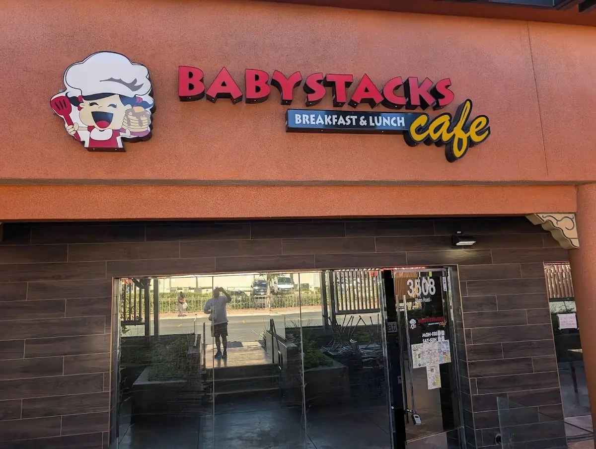

BabyStacks Cafe - Spring Valley brings breakfast dining to this Las Vegas neighborhood. Fuel up with their breakfast menu offerings.
BabyStacks Cafe 2 - Spring Valley is located at 3508 S Wynn Rd., Las Vegas, NV 89103, Las Vegas, NV.
Yes, BabyStacks Cafe 2 - Spring Valley is a restaurants & food featured on My Aloha Map, a directory of Hawaiian, Pacific-Islander and Asian-American-owned businesses.
You can call (702) 665-4419 or visit http://www.babystackscafe.com/.
Monday: 8 AM to 2 PM; Tuesday: 8 AM to 2 PM; Wednesday: 8 AM to 2 PM; Thursday: 8 AM to 2 PM; Friday: 8 AM to 2 PM; Saturday: 8 AM to 2 PM; Sunday: 8 AM to 2 PM.
We verify every business on My Aloha Map, and this one isn't verified yet. If you own it and something's wrong, you'd like to be removed, or you'd like to get verified, contact us here.